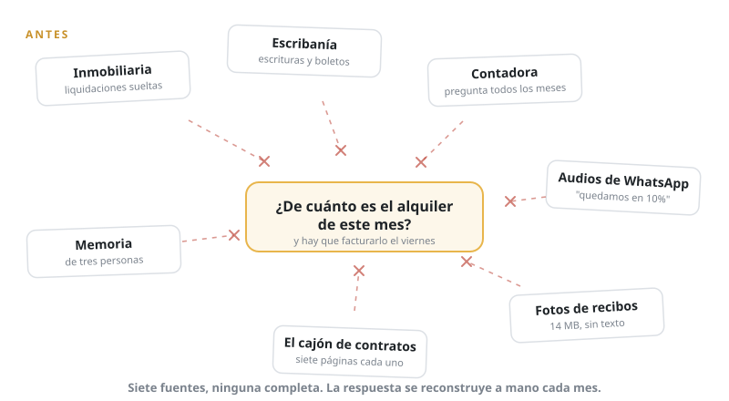
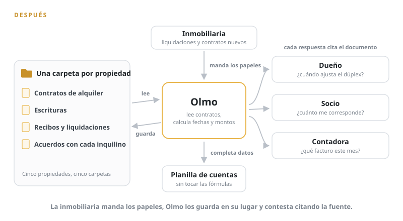

La inmobiliaria escribió al dueño de un dúplex: «Se viene el ajuste del alquiler. ¿Aplicamos el índice que conversamos o seguimos con el del contrato?».
Él sabía de qué propiedad se trataba. Recordaba que habían hablado de cambiar el índice, pero no si habían llegado a un acuerdo. Tampoco tenía presente qué decía exactamente el contrato, ni cuánto daría el alquiler con cada alternativa.
Una pregunta sencilla. Para responderla había que abrir el cajón de los papeles, buscar el contrato y reconstruir una conversación de meses atrás.
El problema no era la falta de información. Era encontrarla.
La información está, pero ¿quién sabe dónde?
En esta pequeña cartera de cinco propiedades, cada inmueble tiene su historia. Contratos firmados en distintos años, ajustes por índices diferentes, escrituras, recibos, acuerdos particulares y documentación que fue quedando repartida entre carpetas, mensajes de WhatsApp, la contadora y la inmobiliaria.
Todos los meses aparecen preguntas parecidas: ¿cuánto corresponde facturar? ¿Cuándo se actualiza este alquiler? ¿Qué recibimos efectivamente? ¿Cuándo vence el contrato? ¿Qué habíamos acordado con este inquilino?
La respuesta suele existir, pero encontrarla lleva tiempo. Y muchas veces depende de que alguien recuerde dónde buscar.

Para resolverlo armé Olmo, un agente de inteligencia artificial que conoce los documentos de esta pequeña cartera y ayuda a administrarla.
Nació de una necesidad concreta: poder consultar la información de las propiedades sin tener que reconstruirla cada vez con distintas personas.

Contratos que se pueden consultar
Los contratos de alquiler no son todos iguales. Algunos ajustan por IPC, otros por Casa Propia y otros establecen porcentajes fijos. También cambian las frecuencias: trimestral, cuatrimestral.
Olmo puede leer esos contratos, identificar las cláusulas relevantes y calcular cuándo corresponde el próximo ajuste.
En el caso del dúplex, por ejemplo, identificó el índice, la frecuencia de actualización, el último ajuste aplicado y la próxima fecha. Como el índice necesario todavía no estaba publicado, no inventó un importe: explicó qué información faltaba y sugirió cómo proceder.
¿Cuándo corresponde el próximo ajuste del dúplex?
El contrato ajusta cada tres meses por el índice Casa Propia. El último ajuste fue el 1 de mayo y el alquiler quedó en $415.000. El próximo corresponde el 1 de agosto, dentro de 12 días.
El índice de ese mes todavía no se publicó. Sugiero avisarle al inquilino cómo se va a calcular y aplicar el ajuste cuando salga el número oficial.
Fuente: contrato de 2023, cláusula 4Cada respuesta incluye la referencia al documento del que obtuvo la información. No hace falta confiar ciegamente en lo que dice el agente: se puede revisar la cláusula original.
Vencimientos antes de que se conviertan en urgencias
Otra tarea habitual es controlar los vencimientos. Le pedí a Olmo que agendara recordatorios 60 días antes del fin de cada contrato. Creó los eventos en el calendario y dejó afuera una propiedad cuyo contrato no estaba cargado. En lugar de inventar una fecha, señaló que faltaba documentación.
También puede identificar próximos vencimientos y preparar borradores de avisos.
La decisión de renovar, negociar condiciones o comunicarse con el inquilino sigue siendo humana. Olmo ayuda a tener la información preparada con anticipación.
Facturación y pagos sin reconstruir todo cada mes
Olmo también ayuda con las cuentas: determinar qué corresponde facturar por propiedad, mantener el acumulado de facturación de los últimos doce meses y advertir cuando se acerca al límite del monotributo.
Puede comparar los pagos esperados con los recibidos. En una conciliación encontró un alquiler del que se esperaban $415.000, pero se habían recibido $460.000 sin una liquidación que explicara la diferencia.
No decidió cómo contabilizarla. Marcó la discrepancia para que alguien la revisara.
La parte menos vistosa, pero más importante
Antes de construir Olmo hubo que juntar los documentos, digitalizarlos y organizarlos. La calidad de las respuestas depende de la información disponible. Si falta un contrato, hay que conseguirlo. Si un documento está equivocado, una persona debe corregirlo.
También establecí límites: Olmo puede agregar información, pero no eliminar ni reemplazar documentos existentes. En la planilla de cuentas que ya utilizaba un cliente, puede completar datos sin modificar las fórmulas.
La idea no fue cambiar toda la forma de trabajar, sino aprovechar mejor lo que ya existía.
¿Y en una inmobiliaria?
Una inmobiliaria tiene algo que esta pequeña cartera no tiene: muchos más inmuebles, propietarios, inquilinos y personas que necesitan consultar información.
El problema que motivó la construcción de Olmo es el mismo: información dispersa, consultas repetitivas y tareas que requieren volver una y otra vez a los mismos documentos o memoria de algún individuo.
No se trata de reemplazar al administrador ni su criterio. Tampoco de descartar los sistemas que ya funcionan. Se trata de explorar qué tareas concretas pueden resolverse mejor cuando la información está organizada y se puede consultar fácilmente.
Si administrás propiedades y reconocés alguno de estos problemas, podemos conversar sobre cómo abordarlo en tu operación.